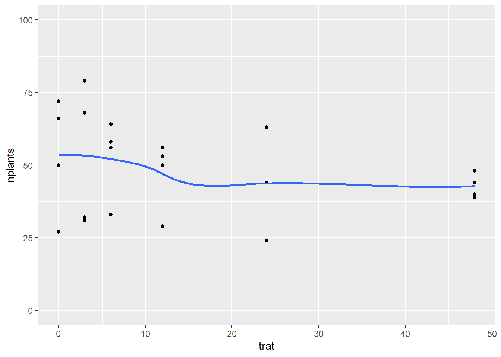
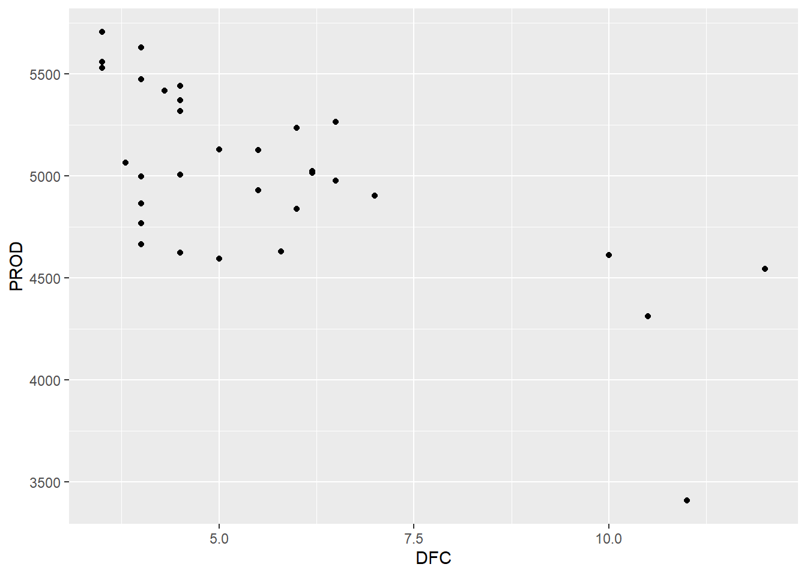

Parcelas subdividas: dentro de cada bloco tem os hibridos aleatoriamente. Naquele bloco, subdivido, aleatorizou o método dentro dos blocos – ou seja, o método foi aleatorizado entre os hibridos em cada bloco. “Hibrido dentro do bloco e método dentro do híbrido”.
Pode utilizar um modelo misto (mistura de um fator de efeito fixo e um fator de efeito aleatório).
Bibliotecas
library(gsheet)library(tidyverse)
── Attaching core tidyverse packages ──────────────────────── tidyverse 2.0.0 ──
✔ dplyr 1.1.4 ✔ readr 2.1.5
✔ forcats 1.0.0 ✔ stringr 1.5.1
✔ ggplot2 3.5.1 ✔ tibble 3.2.1
✔ lubridate 1.9.3 ✔ tidyr 1.3.1
✔ purrr 1.0.2
── Conflicts ────────────────────────────────────────── tidyverse_conflicts() ──
✖ dplyr::filter() masks stats::filter()
✖ dplyr::lag() masks stats::lag()
ℹ Use the conflicted package (<http://conflicted.r-lib.org/>) to force all conflicts to become errors
library(lme4)
Carregando pacotes exigidos: Matrix
Anexando pacote: 'Matrix'
Os seguintes objetos são mascarados por 'package:tidyr':
expand, pack, unpack
library(car)
Carregando pacotes exigidos: carData
Anexando pacote: 'car'
O seguinte objeto é mascarado por 'package:dplyr':
recode
O seguinte objeto é mascarado por 'package:purrr':
some
library(performance)library(DHARMa)
This is DHARMa 0.4.6. For overview type '?DHARMa'. For recent changes, type news(package = 'DHARMa')
library(emmeans)library(multcomp)
Carregando pacotes exigidos: mvtnorm
Carregando pacotes exigidos: survival
Carregando pacotes exigidos: TH.data
Carregando pacotes exigidos: MASS
Anexando pacote: 'MASS'
O seguinte objeto é mascarado por 'package:dplyr':
select
Anexando pacote: 'TH.data'
O seguinte objeto é mascarado por 'package:MASS':
geyser
Warning in checkConv(attr(opt, "derivs"), opt$par, ctrl = control$checkConv, :
unable to evaluate scaled gradient
Warning in checkConv(attr(opt, "derivs"), opt$par, ctrl = control$checkConv, :
Model failed to converge: degenerate Hessian with 1 negative eigenvalues
(1|block/hybrid) = é para indicar para a função que é o fator de efeito aleatório.
Resultado: deu interação significativa entre o hibrido e o metodo.
Testar as premissas
check_normality(mix2)
OK: residuals appear as normally distributed (p = 0.440).
check_heteroscedasticity(mix2)
OK: Error variance appears to be homoscedastic (p = 0.971).
plot(simulateResiduals(mix2))
qqnorm(residuals(mix2))qqline(residuals(mix2))
hist(residuals(mix2))
#mesmo o Dharma dando problema, com o qqlinde e qqnorm os pontos estão próximos da linha, indicando normalidade, por isso, vamos prosseguir assumindo que as premissas foram atendidas.
method = pin:
hybrid response SE df lower.CL upper.CL .group
BG7049H 19.4 10.7 6084 4.10 46.0 A
30K64 20.3 10.9 6084 4.51 47.4 A
30F53 YH 24.5 12.0 6084 6.61 53.7 AB
30F53 HX 25.0 12.1 6084 6.84 54.4 AB
30S31YH 31.7 13.7 6084 10.57 64.2 AB
30S31H 37.1 14.8 6084 13.79 71.8 B
method = silk:
hybrid response SE df lower.CL upper.CL .group
BG7049H 19.1 10.6 6084 3.96 45.6 A
30K64 21.3 11.2 6084 5.00 48.9 A
30F53 HX 24.4 12.0 6084 6.56 53.6 A
30F53 YH 26.0 12.4 6084 7.42 56.0 A
30S31H 26.3 12.5 6084 7.57 56.4 A
30S31YH 26.4 12.5 6084 7.62 56.5 A
Results are averaged over the levels of: block
Degrees-of-freedom method: kenward-roger
Confidence level used: 0.95
Intervals are back-transformed from the sqrt scale
Note: contrasts are still on the sqrt scale
P value adjustment: tukey method for comparing a family of 6 estimates
significance level used: alpha = 0.05
NOTE: If two or more means share the same grouping symbol,
then we cannot show them to be different.
But we also did not show them to be the same.
cld(medias_milho2, Letters = LETTERS)
hybrid = 30F53 HX:
method response SE df lower.CL upper.CL .group
silk 24.4 12.0 6084 6.56 53.6 A
pin 25.0 12.1 6084 6.84 54.4 A
hybrid = 30F53 YH:
method response SE df lower.CL upper.CL .group
pin 24.5 12.0 6084 6.61 53.7 A
silk 26.0 12.4 6084 7.42 56.0 A
hybrid = 30K64:
method response SE df lower.CL upper.CL .group
pin 20.3 10.9 6084 4.51 47.4 A
silk 21.3 11.2 6084 5.00 48.9 A
hybrid = 30S31H:
method response SE df lower.CL upper.CL .group
silk 26.3 12.5 6084 7.57 56.4 A
pin 37.1 14.8 6084 13.79 71.8 B
hybrid = 30S31YH:
method response SE df lower.CL upper.CL .group
silk 26.4 12.5 6084 7.62 56.5 A
pin 31.7 13.7 6084 10.57 64.2 A
hybrid = BG7049H:
method response SE df lower.CL upper.CL .group
silk 19.1 10.6 6084 3.96 45.6 A
pin 19.4 10.7 6084 4.10 46.0 A
Results are averaged over the levels of: block
Degrees-of-freedom method: kenward-roger
Confidence level used: 0.95
Intervals are back-transformed from the sqrt scale
Note: contrasts are still on the sqrt scale
significance level used: alpha = 0.05
NOTE: If two or more means share the same grouping symbol,
then we cannot show them to be different.
But we also did not show them to be the same.
Warning in checkConv(attr(opt, "derivs"), opt$par, ctrl = control$checkConv, : Model is nearly unidentifiable: large eigenvalue ratio
- Rescale variables?
(1|block/hybrid) = é para indicar para a função que é o fator de efeito aleatório.
Resultado: deu interação significativa entre o hibrido e o metodo.
Testar as premissas
check_normality(mix3)
OK: residuals appear as normally distributed (p = 0.214).
check_heteroscedasticity(mix3)
OK: Error variance appears to be homoscedastic (p = 0.686).
plot(simulateResiduals(mix3))
qqnorm(residuals(mix3))qqline(residuals(mix3))
hist(residuals(mix3))
#mesmo o Dharma dando problema, com o qqlinde e qqnorm os pontos estão próximos da linha, indicando normalidade, por isso, vamos prosseguir assumindo que as premissas foram atendidas.
method = pin:
hybrid response SE df lower.CL upper.CL .group
30S31YH 7829 732 26.1 6398 9405 A
30S31H 8081 743 26.1 6626 9681 AB
30F53 YH 9314 798 26.1 7746 11027 ABC
30F53 HX 11130 872 26.1 9410 12995 BC
30K64 11666 893 26.1 9903 13574 C
BG7049H 11914 903 26.1 10131 13841 C
method = silk:
hybrid response SE df lower.CL upper.CL .group
30S31YH 8257 751 26.1 6785 9873 A
30F53 YH 9079 788 26.1 7532 10770 A
30S31H 9135 790 26.1 7583 10832 A
30F53 HX 9932 824 26.1 8311 11698 AB
30K64 10331 840 26.1 8676 12131 AB
BG7049H 12822 936 26.1 10970 14818 B
Results are averaged over the levels of: block
Degrees-of-freedom method: kenward-roger
Confidence level used: 0.95
Intervals are back-transformed from the sqrt scale
Note: contrasts are still on the sqrt scale
P value adjustment: tukey method for comparing a family of 6 estimates
significance level used: alpha = 0.05
NOTE: If two or more means share the same grouping symbol,
then we cannot show them to be different.
But we also did not show them to be the same.
cld(medias_milho4, Letters = LETTERS)
hybrid = 30F53 HX:
method response SE df lower.CL upper.CL .group
silk 9932 824 26.1 8311 11698 A
pin 11130 872 26.1 9410 12995 B
hybrid = 30F53 YH:
method response SE df lower.CL upper.CL .group
silk 9079 788 26.1 7532 10770 A
pin 9314 798 26.1 7746 11027 A
hybrid = 30K64:
method response SE df lower.CL upper.CL .group
silk 10331 840 26.1 8676 12131 A
pin 11666 893 26.1 9903 13574 B
hybrid = 30S31H:
method response SE df lower.CL upper.CL .group
pin 8081 743 26.1 6626 9681 A
silk 9135 790 26.1 7583 10832 B
hybrid = 30S31YH:
method response SE df lower.CL upper.CL .group
pin 7829 732 26.1 6398 9405 A
silk 8257 751 26.1 6785 9873 A
hybrid = BG7049H:
method response SE df lower.CL upper.CL .group
pin 11914 903 26.1 10131 13841 A
silk 12822 936 26.1 10970 14818 A
Results are averaged over the levels of: block
Degrees-of-freedom method: kenward-roger
Confidence level used: 0.95
Intervals are back-transformed from the sqrt scale
Note: contrasts are still on the sqrt scale
significance level used: alpha = 0.05
NOTE: If two or more means share the same grouping symbol,
then we cannot show them to be different.
But we also did not show them to be the same.
Quer saber qual a tendência da porcentagem de sementes infectadas no número de plantas, ou seja, se diminui o estande de plantas emergidas, conforme aumenta a infecção no lote de sementes. Apesar de os dados serem em pontos específicos (0%, 3%, 6%…), se quer estimar qual a relação, o efeito (de 0 a 100%).
Visualização de dados
estande |>ggplot(aes(trat, nplants))+geom_jitter(width =0.05, color ="lightgrey")+stat_summary(fun.data ="mean_cl_boot", size =0.5, color ="black",alpha =0.5)+geom_smooth(method = lm,se =FALSE)+facet_wrap(~exp)+theme_clean()
`geom_smooth()` using formula = 'y ~ x'
geom_smooth(method = lm) = cria a linha de regressão linear
Ta mostrando que há efeito do Bipolaris oryzae causando redução na emergência de plantas no estande de plantas de arroz.
Colocando todos os experimentos como um todo:
estande |>ggplot(aes(trat, nplants))+geom_jitter(width =0.05, color ="lightgrey")+stat_summary(fun.data ="mean_cl_boot", size =0.5, color ="blue",alpha =0.5)+#geom_smooth(method = lm, se = FALSE)+#facet_wrap(~exp)+theme_clean()
`geom_smooth()` using method = 'loess' and formula = 'y ~ x'

Se não colocar o method em geom_smooth ele dá a linha suavizada. O se é para tirar o fundo cinza de tras da linha (erro)
Modelo linear
lm1 <-lm(nplants ~trat,data = exp1)summary(lm1)
Call:
lm(formula = nplants ~ trat, data = exp1)
Residuals:
Min 1Q Median 3Q Max
-25.500 -6.532 1.758 8.573 27.226
Coefficients:
Estimate Std. Error t value Pr(>|t|)
(Intercept) 52.5000 4.2044 12.487 1.84e-11 ***
trat -0.2419 0.1859 -1.301 0.207
---
Signif. codes: 0 '***' 0.001 '**' 0.01 '*' 0.05 '.' 0.1 ' ' 1
Residual standard error: 15 on 22 degrees of freedom
Multiple R-squared: 0.07148, Adjusted R-squared: 0.02928
F-statistic: 1.694 on 1 and 22 DF, p-value: 0.2066
QUal a hipótese nula: que o coeficiente de regressão é igual a 0. Ou seja, não tem efeito. Para cada percentual de inoculo (unidade de x) reduz 0,24 de y (precisa de 4% para reduzir uma planta) Dessa forma, como valor p foi maior que 0,05 (0,207), não rejeita H0, então não tem efeito.
Se não colocar o method em geom_smooth ele dá a linha suavizada. O se é para tirar o fundo cinza de tras da linha (erro)
Modelo linear
lm2 <-lm(nplants ~trat,data = exp2)summary(lm2)
Call:
lm(formula = nplants ~ trat, data = exp2)
Residuals:
Min 1Q Median 3Q Max
-25.7816 -7.7150 0.5653 8.1929 19.2184
Coefficients:
Estimate Std. Error t value Pr(>|t|)
(Intercept) 60.9857 3.6304 16.798 4.93e-14 ***
trat -0.7007 0.1605 -4.365 0.000247 ***
---
Signif. codes: 0 '***' 0.001 '**' 0.01 '*' 0.05 '.' 0.1 ' ' 1
Residual standard error: 12.95 on 22 degrees of freedom
Multiple R-squared: 0.4641, Adjusted R-squared: 0.4398
F-statistic: 19.05 on 1 and 22 DF, p-value: 0.0002473
Para cada percentual de inoculo (unidade de x) reduz 0,70 de y (quase uma planta)
Tem efeito significativo: p-valor < 0,05
Adjusted R-squared: é uma medida estatística utilizada em regressão linear para avaliar o ajuste do modelo aos dados. Ou seja, quanto maior o R2, maior a relação de y ser em função do x. Quanto maior variabilidade nos pontos (dispersão), o R2 diminui e o p-valor aumenta. Vai explicar menos, quanto mais disperso são os dados.
Fazendo transformação dos dados: fica mais linear a linha
`geom_smooth()` using method = 'loess' and formula = 'y ~ x'
Warning: Removed 4 rows containing non-finite outside the scale range
(`stat_smooth()`).
Fazendo GLM
glm2 <-glm(nplants ~trat, family ="gaussian",data = exp2)summary(glm2)
Call:
glm(formula = nplants ~ trat, family = "gaussian", data = exp2)
Coefficients:
Estimate Std. Error t value Pr(>|t|)
(Intercept) 60.9857 3.6304 16.798 4.93e-14 ***
trat -0.7007 0.1605 -4.365 0.000247 ***
---
Signif. codes: 0 '***' 0.001 '**' 0.01 '*' 0.05 '.' 0.1 ' ' 1
(Dispersion parameter for gaussian family taken to be 167.7464)
Null deviance: 6886.6 on 23 degrees of freedom
Residual deviance: 3690.4 on 22 degrees of freedom
AIC: 194.96
Number of Fisher Scoring iterations: 2
AIC(glm2)
[1] 194.9597
glm2b <-glm(nplants ~trat, family ="poisson",data = exp2)summary(glm2b)
Call:
glm(formula = nplants ~ trat, family = "poisson", data = exp2)
Coefficients:
Estimate Std. Error z value Pr(>|z|)
(Intercept) 4.134189 0.037583 110.003 < 2e-16 ***
trat -0.016270 0.002059 -7.901 2.76e-15 ***
---
Signif. codes: 0 '***' 0.001 '**' 0.01 '*' 0.05 '.' 0.1 ' ' 1
(Dispersion parameter for poisson family taken to be 1)
Null deviance: 139.783 on 23 degrees of freedom
Residual deviance: 69.578 on 22 degrees of freedom
AIC: 210.24
Number of Fisher Scoring iterations: 4
`geom_smooth()` using method = 'loess' and formula = 'y ~ x'
Warning: Removed 3 rows containing non-finite outside the scale range
(`stat_smooth()`).
Warning: Removed 3 rows containing missing values or values outside the scale range
(`geom_point()`).
glm3 <-glm(nplants ~trat, family ="poisson",data = exp3)summary(glm3)
Call:
glm(formula = nplants ~ trat, family = "poisson", data = exp3)
Coefficients:
Estimate Std. Error z value Pr(>|z|)
(Intercept) 4.571590 0.029539 154.762 < 2e-16 ***
trat -0.009965 0.001488 -6.697 2.13e-11 ***
---
Signif. codes: 0 '***' 0.001 '**' 0.01 '*' 0.05 '.' 0.1 ' ' 1
(Dispersion parameter for poisson family taken to be 1)
Null deviance: 77.906 on 23 degrees of freedom
Residual deviance: 29.952 on 22 degrees of freedom
AIC: 183.93
Number of Fisher Scoring iterations: 4
AIC(glm3)
[1] 183.9324
Análise global (sem ser para cada experimentos = todos os experimentos juntos)
Warning in glmer(nplants ~ trat + (trat | exp), family = "gaussian", data =
estande): calling glmer() with family=gaussian (identity link) as a shortcut to
lmer() is deprecated; please call lmer() directly
Warning in checkConv(attr(opt, "derivs"), opt$par, ctrl = control$checkConv, :
Model failed to converge with max|grad| = 0.00274249 (tol = 0.002, component 1)
summary(glm3)
Linear mixed model fit by REML ['lmerMod']
Formula: nplants ~ trat + (trat | exp)
Data: estande
REML criterion at convergence: 580.8
Scaled residuals:
Min 1Q Median 3Q Max
-2.0988 -0.6091 0.1722 0.6360 1.9963
Random effects:
Groups Name Variance Std.Dev. Corr
exp (Intercept) 510.68405 22.5983
trat 0.05516 0.2349 -0.82
Residual 167.91303 12.9581
Number of obs: 72, groups: exp, 3
Fixed effects:
Estimate Std. Error t value
(Intercept) 69.7452 13.2146 5.278
trat -0.5687 0.1643 -3.462
Correlation of Fixed Effects:
(Intr)
trat -0.731
optimizer (nloptwrap) convergence code: 0 (OK)
Model failed to converge with max|grad| = 0.00274249 (tol = 0.002, component 1)
AIC(glm3)
[1] 592.8402
glm3b <-glmer(nplants ~trat + (trat|exp), family =poisson(link ="log"),data = estande)summary(glm3b)
Generalized linear mixed model fit by maximum likelihood (Laplace
Approximation) [glmerMod]
Family: poisson ( log )
Formula: nplants ~ trat + (trat | exp)
Data: estande
AIC BIC logLik deviance df.resid
660.7 672.1 -325.4 650.7 67
Scaled residuals:
Min 1Q Median 3Q Max
-3.6247 -0.8083 0.1042 0.9601 3.6511
Random effects:
Groups Name Variance Std.Dev. Corr
exp (Intercept) 6.425e-02 0.253478
trat 1.602e-05 0.004003 -0.17
Number of obs: 72, groups: exp, 3
Fixed effects:
Estimate Std. Error z value Pr(>|z|)
(Intercept) 4.223397 0.147793 28.577 < 2e-16 ***
trat -0.010434 0.002538 -4.111 3.93e-05 ***
---
Signif. codes: 0 '***' 0.001 '**' 0.01 '*' 0.05 '.' 0.1 ' ' 1
Correlation of Fixed Effects:
(Intr)
trat -0.192
Warning in checkConv(attr(opt, "derivs"), opt$par, ctrl = control$checkConv, :
Model failed to converge with max|grad| = 0.416806 (tol = 0.002, component 1)
summary(mofo3)
Linear mixed model fit by maximum likelihood ['lmerMod']
Formula: yld ~ inc + (inc | study)
Data: wm
AIC BIC logLik deviance df.resid
5319.4 5343.1 -2653.7 5307.4 376
Scaled residuals:
Min 1Q Median 3Q Max
-3.7078 -0.5991 -0.0295 0.5077 3.2364
Random effects:
Groups Name Variance Std.Dev. Corr
study (Intercept) 557573.08 746.708
inc 36.85 6.071 -0.29
Residual 37228.73 192.947
Number of obs: 382, groups: study, 35
Fixed effects:
Estimate Std. Error t value
(Intercept) 3455.432 128.063 26.98
inc -17.236 1.451 -11.88
Correlation of Fixed Effects:
(Intr)
inc -0.300
optimizer (nloptwrap) convergence code: 0 (OK)
Model failed to converge with max|grad| = 0.416806 (tol = 0.002, component 1)
Aula 10
Correlação linear
Importação dos dados e visualização
Que correlação tem entre a análise dos grupos (diferentes programas que fizeram a análise das imagens)? Definimos como padrão o Assess.
Correlação: associação entre duas variáveis. A força da associação é em função da dispersão dos dados, quanto mais diperso, mais fraca é a associação. Quanto mais próximo, menos disperso, são os dados, a associação é mais forte.
Obtém o r (COEFICIENTE DE CORRELAÇÃO) = força de associação entre x e y. Correlação: entre variáveis respostas diferentes.
Coeficiente de Pearson: -1 > 0 > 1 (correlação negativa e positiva).
Pode obter a significação da correlação através do p-valor.
Correlação não quer dizer causalidade: não tem relação de causa e efeito. Exemplo: aumentou o consumo de sorvete e aumentou a temperatura do mar - uma coisa não tem causa e efeito com a outra.
Regressão: R² (quanto da variação de y é explicado pelo x) = COEFICIENTE DE DETERMINAÇÃO. R² é sempre menor que o r. O R² é sempre menor que r.
Pearson's product-moment correlation
data: img$Assess and img$LeafDoctor
t = 31.119, df = 68, p-value < 2.2e-16
alternative hypothesis: true correlation is not equal to 0
95 percent confidence interval:
0.9466882 0.9792005
sample estimates:
cor
0.9666367
cor(img$Assess, img$LeafDoctor)
[1] 0.9666367
library(corrplot)
corrplot 0.92 loaded
cor_img2 <-cor(img2)corrplot(cor_img2, method ='number', type ="lower")
cor_img2 <-cor(img2)corrplot(cor_img2, method ='number', type ="upper")
cor.test dá mais informações do que a função cor. Quanto maior o r, menor o p-valor. P-valor: hipótese alternativa é que a a ccorrelação é igual a 0 (não tem correlação significativa). p-value = < 2.2e-16 indica que a correlação é muito forte (p-valor altamente significativo) o r = 0,98 indica eplevada correlação entre os resultados.
campo <-gsheet2tbl("https://docs.google.com/spreadsheets/d/1bq2N19DcZdtax2fQW9OHSGMR0X2__Z9T/edit#gid=866852711")campo2 <- campo |> dplyr::select(DFC, FER, PROD)corgraph(campo2)
Var1 Var2 cor p
2 FER DFC 0.9316978 9.864101e-15
3 PROD DFC -0.6928161 1.110652e-05
6 PROD FER -0.6258321 1.277444e-04
cor.test(campo$PROD, campo$DFC)
Pearson's product-moment correlation
data: campo$PROD and campo$DFC
t = -5.2623, df = 30, p-value = 1.111e-05
alternative hypothesis: true correlation is not equal to 0
95 percent confidence interval:
-0.8388581 -0.4537361
sample estimates:
cor
-0.6928161
cor.test(campo$PROD, campo$FER)
Pearson's product-moment correlation
data: campo$PROD and campo$FER
t = -4.3949, df = 30, p-value = 0.0001277
alternative hypothesis: true correlation is not equal to 0
95 percent confidence interval:
-0.7999565 -0.3544981
sample estimates:
cor
-0.6258321
campo |>ggplot(aes(DFC, PROD))+geom_point()

Regressão linear modelo quadrático
o modelo quadrático é um modelo linear de ordem 2! (= modelo curvi-linear)
Função para o modelo quadrático: formula = y ~ poly(x,2) no ggplot
grau = 2 é função quadrática (R² maior que o grau = 1 então é melhor), o grau = 1 é função linear. Grau 3 (cubica) fica melhor ainda, não tem uma explicação biológica para isso. para acubica o valor-p é 0,21.
mean_germination ~ dose: A fórmula que especifica a variável resposta (mean_germination) e a variável preditora (dose).
data = pyra2: O data frame que contém os dados.
isolate_col = “code”: A coluna que identifica os diferentes isolados.
interval = “delta”: O método para calcular os intervalos de confiança.
fct = drc::LL.3(): A função de ajuste logística de três parâmetros do pacote drc.
Atenção
Quanto maior a EC50, menor a sensibilidade. Ou seja, requer uma quantidade maior de produto, para ter o efeito de redução de 50% A EC50 (concentração efetiva 50) é a concentração de um agente (exemplo, fungicida) que é necessária para obter 50% do efeito máximo desejado. Portanto, a interpretação da EC50 é:
Maior EC50: Indica menor sensibilidade do organismo ao agente. Isso significa que é necessária uma concentração maior do agente para alcançar o efeito desejado.
Menor EC50: Indica maior sensibilidade do organismo ao agente. Isso significa que uma concentração menor do agente é suficiente para alcançar o efeito desejado
Essa relação é crucial para entender a eficácia e a dosagem necessária de determinado produto.